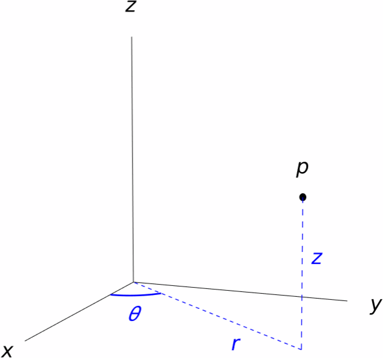
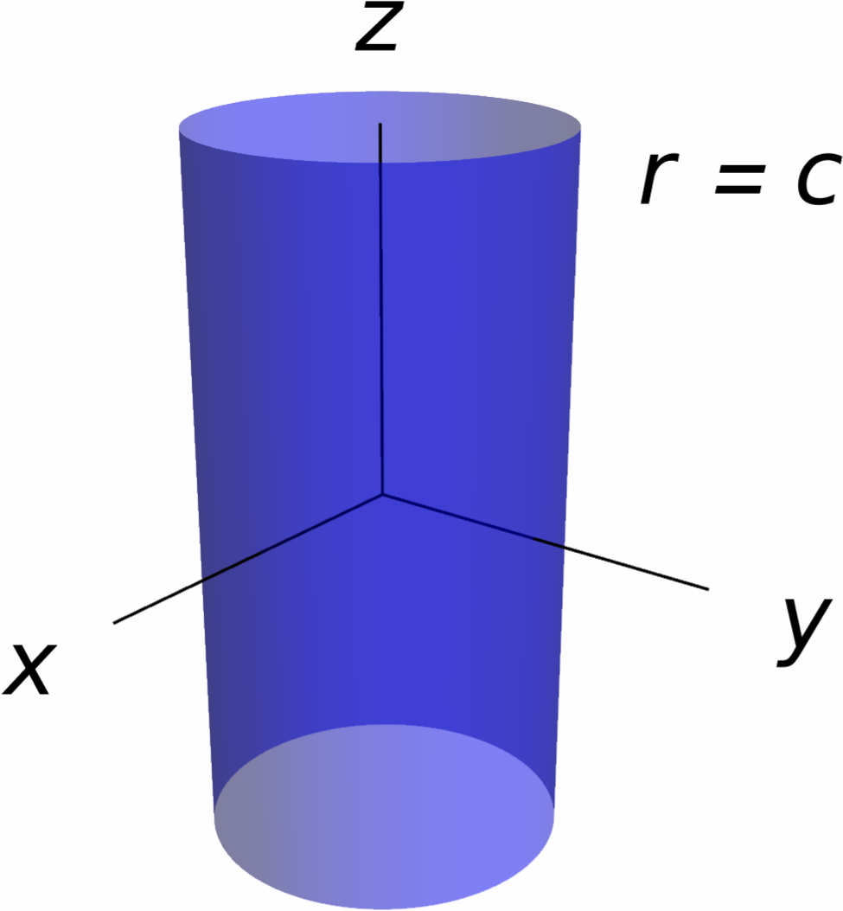
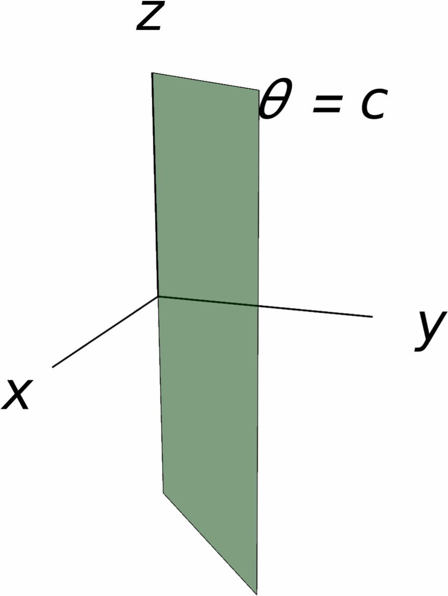
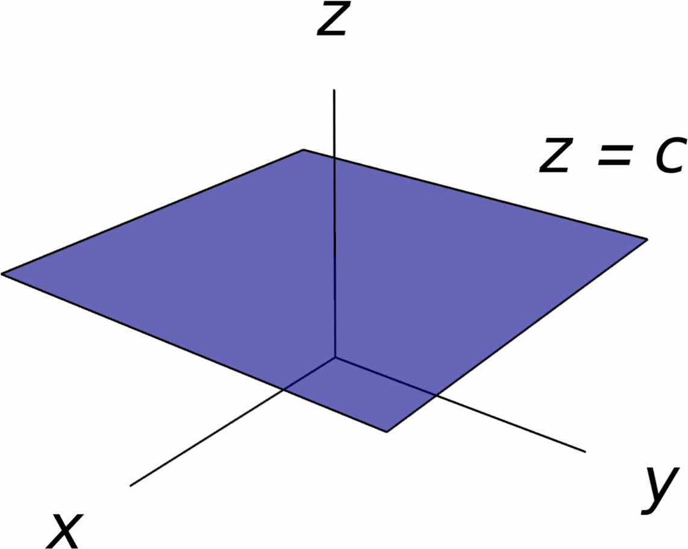
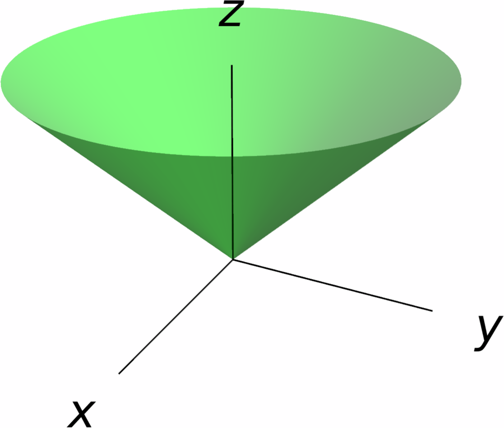
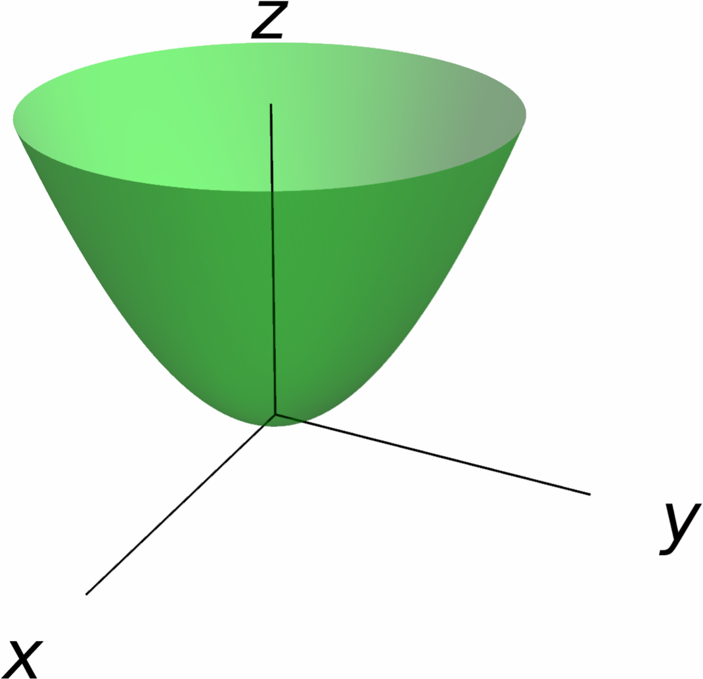
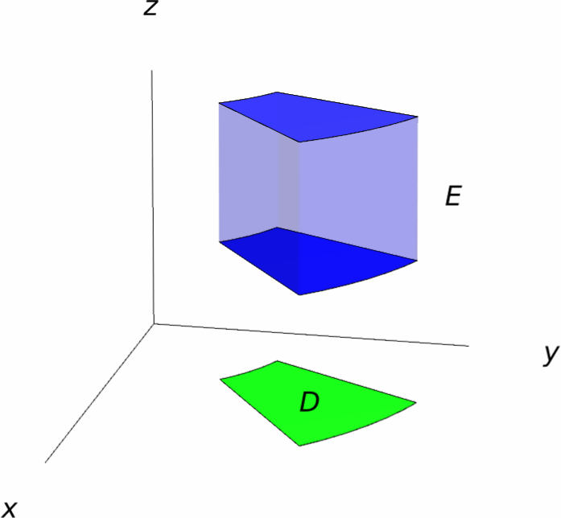
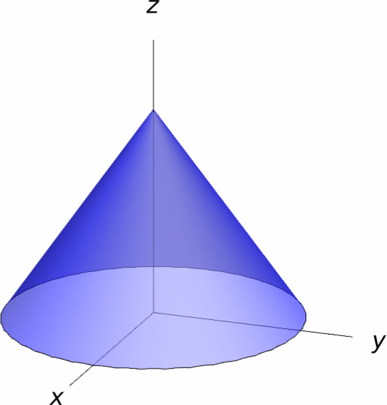
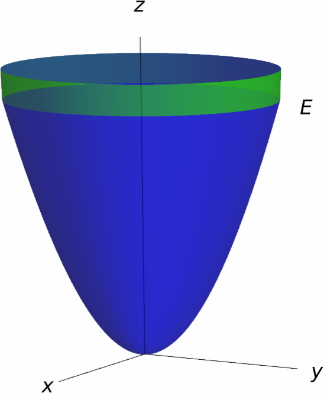

Integration in Cylindrical Coordinates
Recall that some double integrals may be evaluated more easily by switching to polar coordinates. Because of this, it would be interesting to develop a three-dimensional analogue of the polar coordinate system that may allow us to simplify some triple integrals. Basically, there are two main "polar coordinate systems" that one can consider in $\RR^3$, known as cylindrical coordinates and spherical coordinates. The purpose of this section is to introduce the cylindrical coordinate system in $\RR^3$ and discuss how to evaluate triple integrals by switching to cylindrical coordinates.
The Cylindrical Coordinate System
Let $p=(x,y,z)$ be a point in $\RR^3$. Essentially, the cylindrical coordinates of $p$ are computed by taking the point $(x,y)$ (which is the projection of $p$ onto the $xy$-plane) and switching it by its polar coordinates $(r,\theta)$. The $z$-coordinate remains unchanged.
Given a point $p$ in space, we can relate its Cartesian coordinates $(x,y,z)$ and its cylindrical coordinates $(r,\theta,z)$ by the equations \[ x=r\cos \theta,\qquad y=r\sin\theta,\qquad z=z. \] Moreover, \[ r^2=x^2+y^2. \] In addition, note that $(r,\theta+2\pi,z)$ are also cylindrical coordinates of the point $p$. Thus, adding or subtracting a multiple of $2\pi$ to $\theta$ still gives us cylindrical coordinates for the point $p$.

Solution.
Let's find cylindrical coordinates $(r,\theta,z)$ for $(-2,2,3)$. Observe that $z=3$ and \[ r^2=x^2+y^2=4+4=8, \] so $r=\sqrt{8}=2\sqrt{2}$. To find $\theta$, we see that \[ 2\sqrt{2}\cos\theta = -2, \qquad 2\sqrt{2}\sin\theta = 2. \] Consequently, $\cos\theta=\tfrac{-1}{\sqrt{2}}$ and $\sin\theta=\tfrac{1}{\sqrt{2}}$, so $\theta=\frac{3\pi}4$ (we could also add any multiple of $2\pi$). In conclusion, a set of cylindrical coordinates for $p$ is \[ \bigg(2\sqrt{2},\frac{3\pi}4,3\bigg). \]
Solution.
In this case, we have $(r,\theta,z)=(4,\tfrac{\pi}3,2)$, which yields \[ \begin{aligned} x={}&r\cos\theta=4\cos\frac{\pi}3=\frac42=2,\\ y={}&r\sin\theta=4\sin\frac{\pi}3=\frac{4\sqrt{3}}2=2\sqrt{3},\\ z={}&2. \end{aligned} \]
Thus, the rectangular coordinates of $q$ are $\big(2,2\sqrt{3},2\big)$.
To get a better intuition of cylindrical coordinates, let us try to plot some surfaces in space defined via cylindrical coordinates.
A good starting point is to consider the equations of the form $r=c$, $\theta=c$ and $z=c$. We have:
- $r=c$ is equivalent (in Cartesian coordinates) to $x^2+y^2=c^2$, so the surface of radius $c$ is merely a cylinder centered around the $z$-axis and of radius $c$. This is why these coordinates are called cylindrical coordinates.
- $\theta = c$ is a vertical plane that makes an angle of $c$ radians with respect to the $x$-axis.
- $z=c$ is a plane perpendicular to the $z$-axis that is placed at height $z$.



Solution.
Let's start with the surface $S$ of equation $z=r$. In this case, using the fact that $r^2=x^2+y^2$, we see that $S$ can be described in Cartesian coordinates by the equation \[ z=\sqrt{x^2+y^2}. \] This means that $S$ is a cone around the $z$-axis.

Now, let us work on the surface $S'$. Here, we have $z=r^2=x^2+y^2$, so $S'$ is a paraboloid centered around the $z$-axis.

Integration in Cylindrical Coordinates
Here we develop a change of variables formula that will allow us to compute integrals in cylindrical coordinates.
Consider a solid region $E$ in space that is of Type I. This meant that there is some plane region $D$ in the $xy$-plane and two continuous functions $g_1$ and $g_2$ of $x$ and $y$ so that \[ E=\big\{(x,y,z)\mid (x,y)\in D,\, g_1(x,y)\leq z\leq g_2(x,y) \big\}. \] In addition, suppose that $D$ is a polar region of the form \[ D=\big\{(r,\theta)\mid \alpha\leq \theta\leq \beta,\,h_1(\theta)\leq r \leq h_2(\theta)\big\}. \]

In cylindrical coordinates, we can describe $E$ as \[ E=\big\{(r,\theta,z)\mid \alpha\leq \theta\leq \beta,\,h_1(\theta)\leq r \leq h_2(\theta),\, g_1(x,y)\leq z\leq g_2(x,y) \big\}. \]
Now, suppose that $f\colon E\to \RR$ is a continuous function. Since $E$ is a region of Type I, \[ \iiint_E f(x,y,z)\,dV=\iint_D \int_{g_1(x,y)}^{g_2(x,y)}f(x,y,z)\,dz\,dA. \] Moreover, if we change to polar coordinates in the inner integral, we obtain \[ \iiint_E f(x,y,z)\,dV =\int_\alpha^\beta \int_{h_1(\theta)}^{h_2(\theta)} \int_{g_1(r\cos\theta,r\sin\theta)}^{g_2(r\cos\theta,r\sin\theta)}r f(r\cos\theta,r\sin\theta,z)\,dz\,dr\,d\theta. \]
We have thus arrived at the following change of variables formula:
Solution.
In cylindrical coordinates, the cone $z=3-\sqrt{x^2+y^2}$ can be written as $z=3-r$. In addition, this cone meets the $xy$-plane when $r=3$, so that the intersection of these two surfaces is the disk $D$ centered at the origin with radius $3$.
The projection of $E$ onto the $xy$-plane is precisely the disk $D$, so in cylindrical coordinates, \[ E=\big\{(r,\theta,z)\mid 0\leq \theta\leq 2\pi,\,0\leq r\leq 3,\,0\leq z\leq 3-x \big\}. \]

Consequently, if we change to cylindrical coordinates, we obtain \[ \begin{aligned} \iiint_E xz\,dV =& \int_0^{2\pi}\int_0^3\int_0^{3-r}r^2z\cos\theta\,dz\,dr\,d\theta = \int_0^{2\pi}\int_0^3\bigg[\frac{r^2z^2\cos\theta}{2}\bigg]_{z=0}^{z=3-r}\,dr\,d\theta \\ =& \int_0^{2\pi}\int_0^3\frac{r^2(3-r)^2\cos\theta}{2}\,dr\,d\theta = \frac12\int_0^{2\pi}\cos\theta\,d\theta\int_0^3r^2(3-r)^2\,dr. \end{aligned} \] Note that \[ \int_0^{2\pi}\cos\theta\,d\theta=[\sin\theta]_{0}^{2\pi}=0, \] so we conclude that \[ \iiint_E xz\,dV = 0. \]
Solution
Firstly, let us recognize the region of integration. Looking at the bounds of the integral, we see that the region is \[ E= \Big\{(x,y,z)\mid -3\leq y\leq 3,\,-\sqrt{9-y^2}\leq x\leq\sqrt{9-y^2},\,2x^2+2y^2\leq z\leq 20 \Big\}. \]
This is a region of Type I whose projection onto the $xy$-plane is the disk centered at the origin and with radius $3$, whereas $z$ is enclosed between the functions $2x^2+2y^2$ and $20$.
In cylindrical coordinates, this region becomes \[ E=\big\{(r,\theta,z)\mid 0\leq\theta\leq 2\pi,\,0\leq r\leq 3,\,2r^2\leq z\leq 20\big\}. \]

Consequently, by changing to cylindrical coordinates we see that \[ \begin{aligned} I =& \iiint_E \sqrt{x^2+y^2}\,dV = \int_0^{2\pi}\int_0^3\int_{2r^2}^{20}r\cdot r\,dz\,dr\,d\theta = \int_0^{2\pi}\int_0^3\int_{2r^2}^{20}r^2\,dz\,dr\,d\theta \\ =& \int_0^{2\pi}\int_0^3r^2\big(20-r^2\big)\,dr\,d\theta = \int_0^{2\pi}\int_0^3\big(20r^2-r^4\big)\,dr\,d\theta = \int_0^{2\pi}d\theta\int_0^3\big(20r^2-r^4\big)\,dr \\ ={}& 2\pi\cdot\frac{657}{5} = \frac{1314\pi}5. \end{aligned} \]